Labour & livelihoods
Employment, working conditions and how households make a living.
MOHD AZEEM · M.SC. DIGITAL SOCIETY · INDIA
I am a social science researcher who collects evidence in the field, analyses India’s survey data in Stata, R and Python, and builds research tools like StockItihas. My work connects people, technology and public policy.
StockItihas is a free web app that turns years of National Stock Exchange (NSE) price history into a clean, searchable record. Anyone can open it and study how Indian stocks have actually moved - no sign-up wall, no noise.
What it does: a Market Screener with filters and intraday top movers; Long-Term Compounders that compare each stock with its own past over 1 to 10 years under strict data-quality rules; and a Stock Deep-Dive with interactive price and volume charts for any single stock.
Why it sits on a researcher's portfolio: it is my data handiness, proven in public. I collect large, messy market data, clean it, check it for accuracy, store it efficiently in DuckDB and present it through a Python and Streamlit dashboard with user accounts - the same pipeline discipline I apply to PLFS and NFHS survey data.
History and record-keeping only - no predictions and no investment advice.
Open StockItihas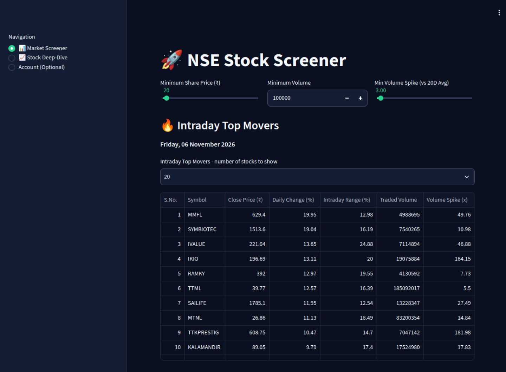
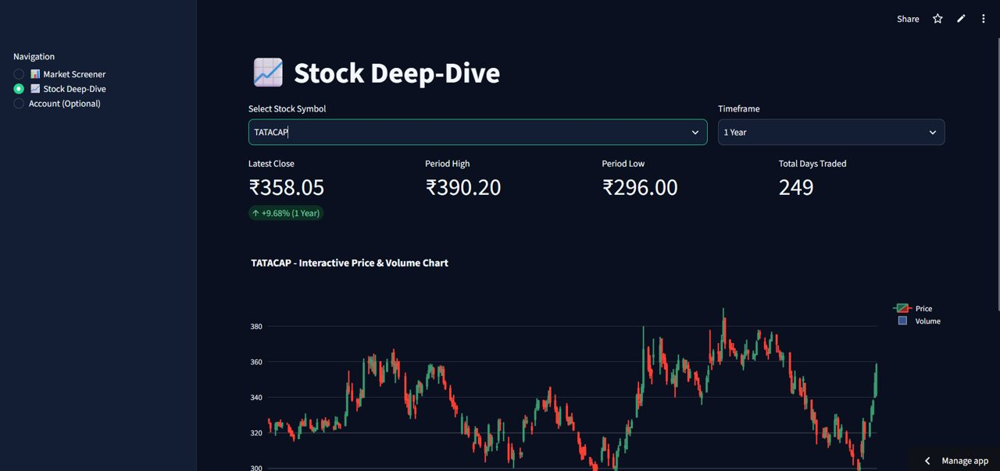
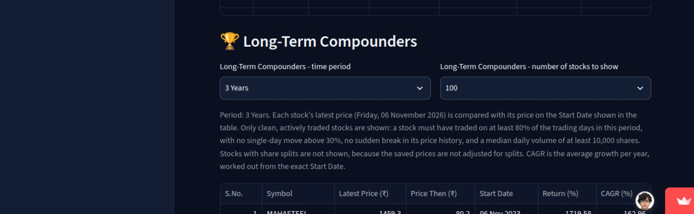
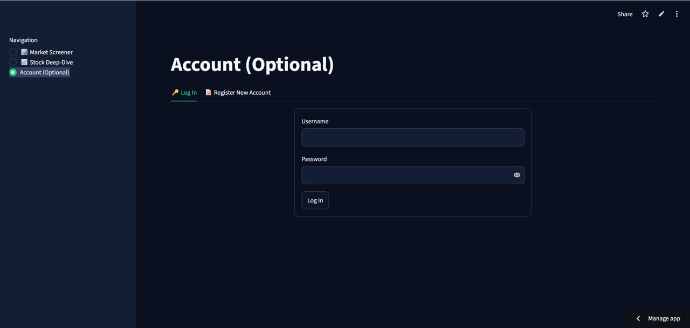
Research on how technology, work and public policy shape everyday life.
I’m interested in how digital systems and public programmes affect people’s access to work, credit, healthcare and other essential services.
My experience includes field research in Chhattisgarh and Jharkhand and research on agriculture and digital society in Rajasthan. I also explore data on Rae Bareli and Uttar Pradesh, where I have a personal connection.
Explore my GitHub portfolioEmployment, working conditions and how households make a living.
How technology shapes access to healthcare and public services.
Farmers’ access to credit, markets and digital services.
What household and labour data reveal about uneven change.
Formal study and specialist training in social science and labour data.
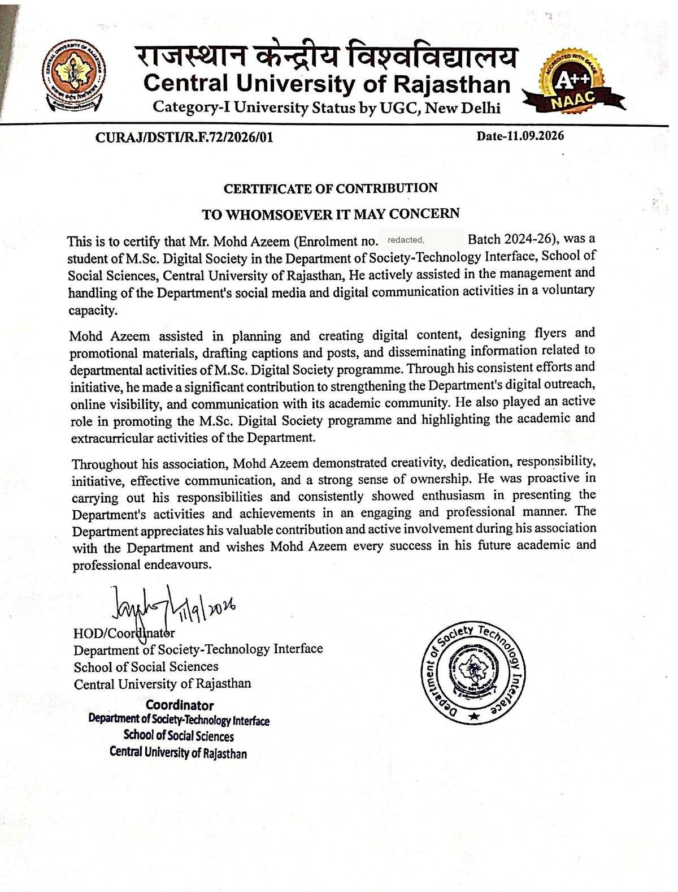
Contribution certificate · supports university affiliation, not a degree certificate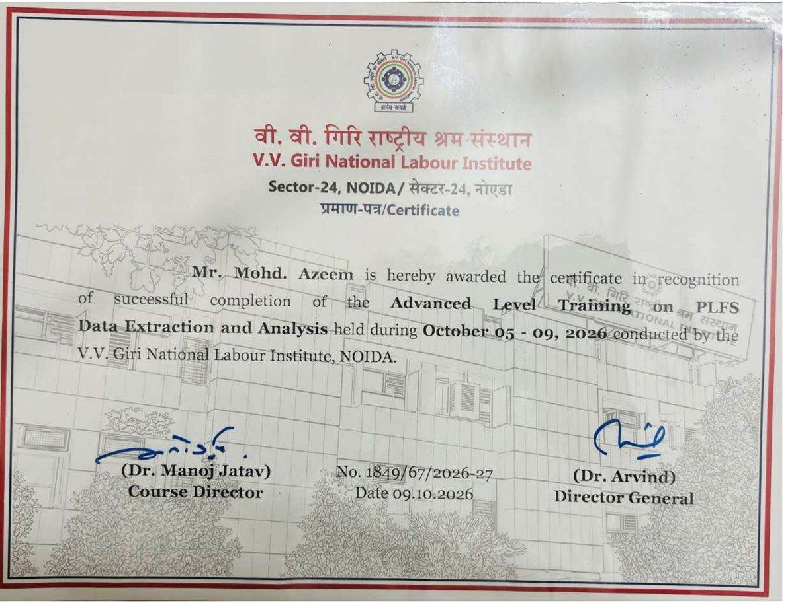
5–9 October 2026 · fully funded residential programmeResearch and communication experience in academic settings.
Department of Humanities and Social Sciences
Supported field research and data entry for research on healthcare digitalisation in Chhattisgarh and Jharkhand.
Department of Society–Technology Interface, Central University of Rajasthan
India representative, Dhaka University Research Society
Each project page includes its data, sources, methods and current limitations.
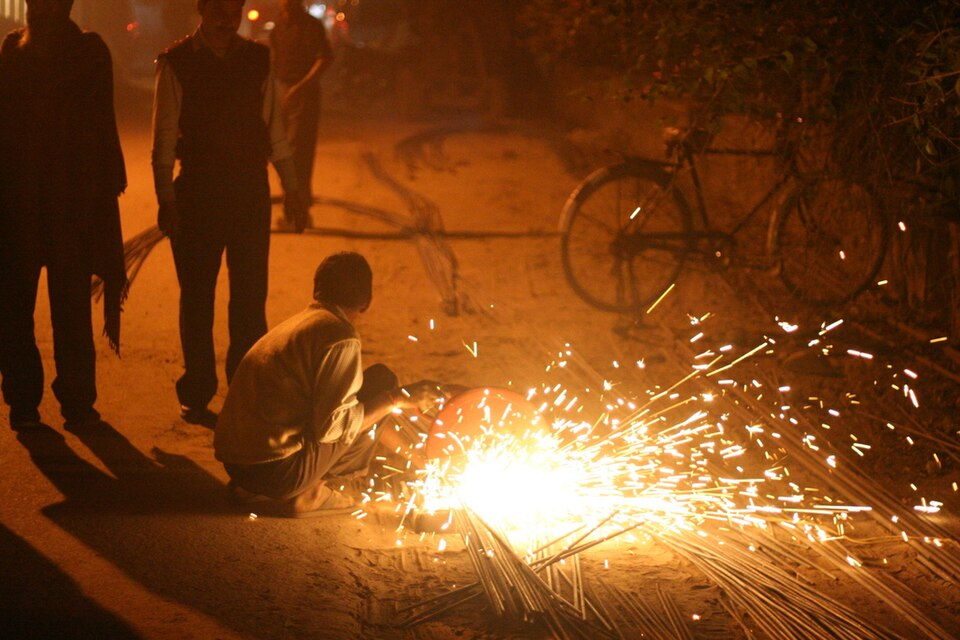
01All-India LFPR, WPR and unemployment rates by sex, area and status, with charts and MoSPI sources.
View data and charts ↗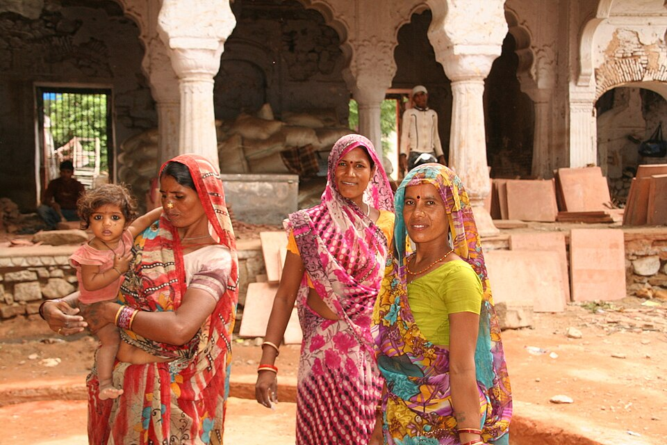
02A focused comparison of published female labour force participation, employment and unemployment rates.
View analysis ↗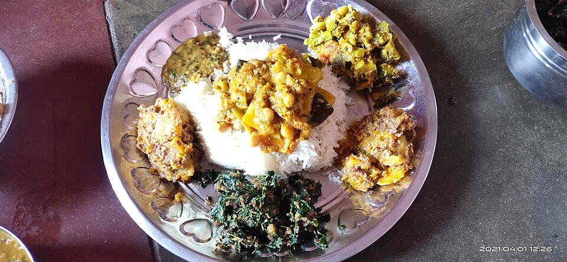
03Selected MoSPI tables on monthly per-capita expenditure, item groups, trends and State/UT comparisons.
View tables and charts ↗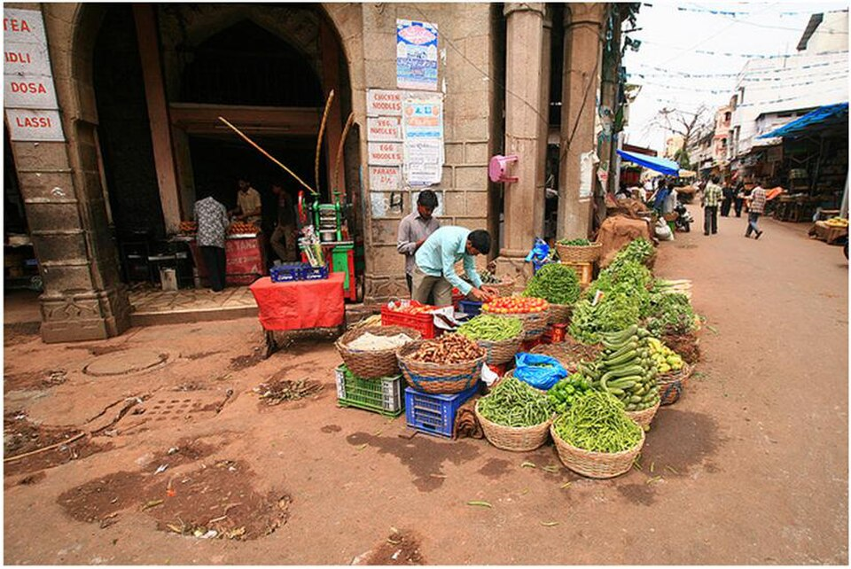
04State/UT data on e-NAM market integration, cumulative trade and farmer registrations.
View data and sources ↗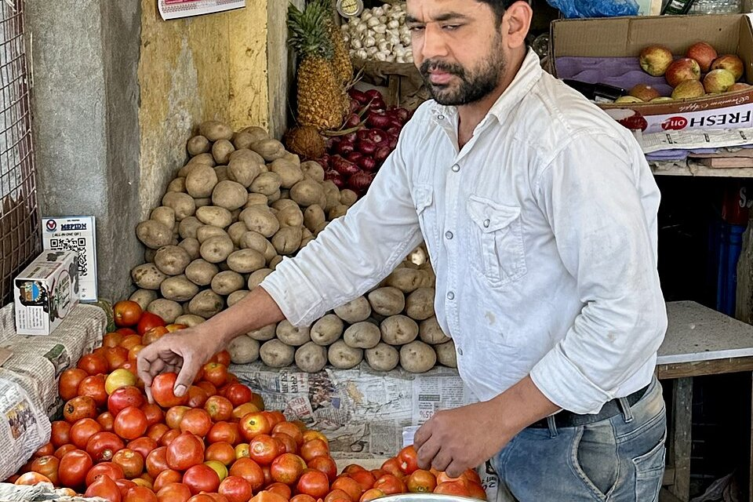
05Early Stata summaries for selected measures across India, Uttar Pradesh and Rae Bareli.
Read status and limitations ↗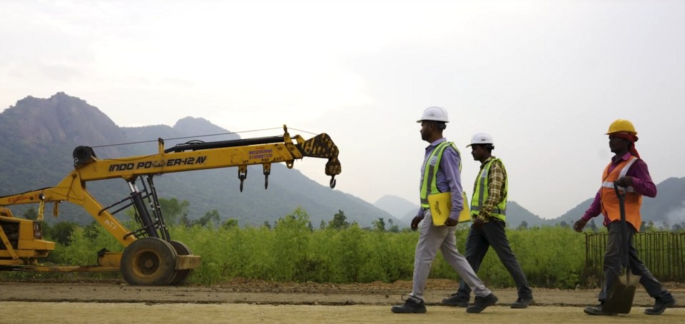
06Early Stata summaries, separated from the historical PLFS series after the 2025 redesign.
Read status and limitations ↗My M.Sc. dissertation at the Central University of Rajasthan examines how farmers experience technology-supported agricultural credit in rural Jaipur, Rajasthan. The research was supervised by Dr. Jaya Kritika Ojha and brings together field research and analysis of Dvara KhetScore. The public brief summarizes the work and its limitations.
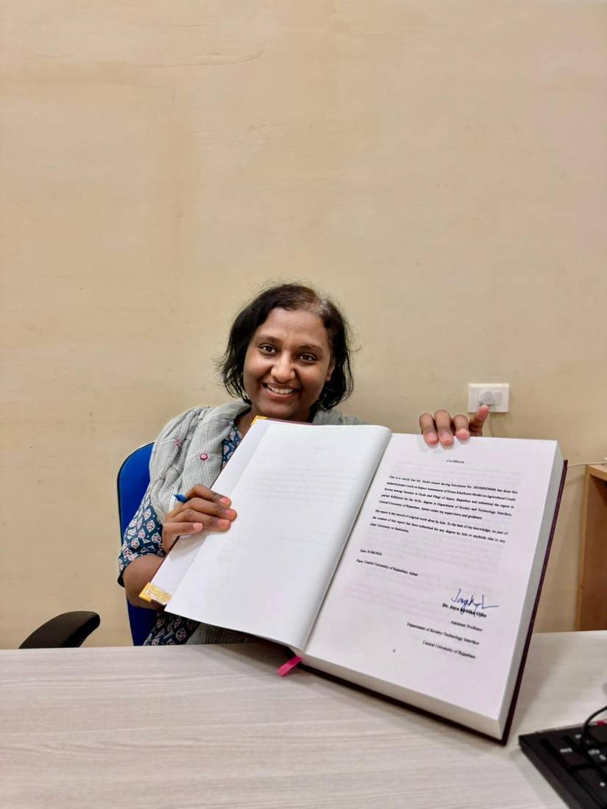

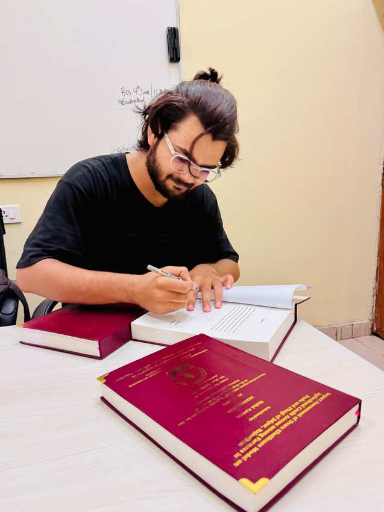
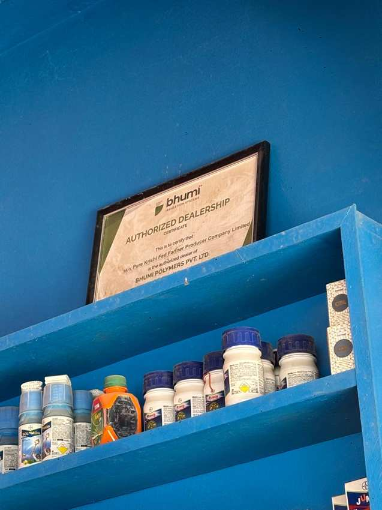
I pair field-based inquiry with quantitative analysis and pay close attention to how data are collected, defined and interpreted.
Tools I have worked with: Stata, R, Python, SPSS, NVivo, KoboToolbox, LaTeX, Zotero, GitHub and Streamlit.
RESEARCH AND COLLABORATION
I welcome conversations about social research, labour, digitalisation, agriculture and public policy.